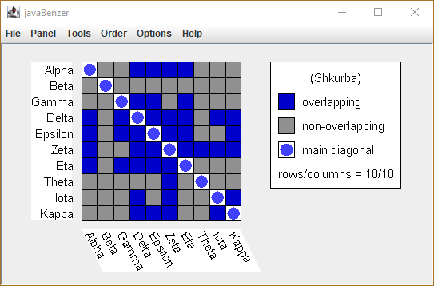
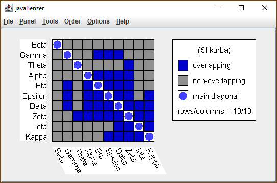
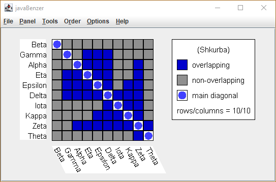
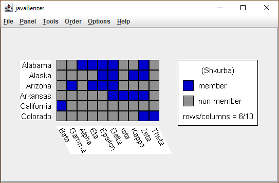

In the following example, I will display the interaction matrix (also referred to as the recombination matrix) as a collection of light and dark boxes. The light boxes refer to mutants which were able to form wild-type offspring via cross-over between there genetic material. The dark boxes indicate that no such events were observed. The dark boxes on the main diagonal are present by definition, because the interaction of a deletion mutant with itself is unable to produce wild-type recombinants.
After starting the program, I selected <File> --> <New> and chose the <Random> option. When asked, I specified that there would be 10 (ten) deletion mutants and 6 (six) deletion regions. The resulting problem was as follows:

This display was produced by <Panel> --> <Shkurba> and then <Items>.
One good first strategy when trying to order these mutants is to group all the light boxes in the bottom row on the left side and all the dark boxes on the right. Next you do the same thing on the next row up, taking care not to change the pattern of the lower row(s) and only proceeding from the left edge of the matrix to the main diagonal). Repeat this until you reach the top of the matrix.
The resulting display appears as follows:

Notice that the ordering isn’t perfect, in particular, it looks like Gamma and Theta are probably in the wrong places. A little further manipulation shows that a proper "arrowhead" pattern can be established by moving Zeta and Theta to the right end of the row. This produces the following display:

Obviously, I could reverse the order entirely. This would still give me an "arrowhead" pattern, it would just point to the upper left instead of the lower right. Also, note that Beta doesn’t overlap with any of the other mutants, so I could shift just that item all the way to the other side and still have a valid pattern. As I said before, these solutions are not necessarily unique, but they do describe the data.
Now, I can read the maximal cliques from this display,
(Theta, Zeta) (Zeta, Kappa, Iota, Delta) (Zeta, Kappa, Delta, Epsilon) (Zeta, Delta, Epsilon, Eta, Alpha) (Delta, Epsilon, Eta, Gamma) (Beta)
or I can go to the menu and then choose <Panel> --> <Display> and the option <Cliques> which will show me the following:
Clique = { Member Items }
Arizona = {Gamma, Delta, Epsilon, Eta}
Alabama = {Alpha, Delta, Epsilon, Zeta, Eta}
Alaska = {Kappa, Delta, Epsilon, Zeta}
Arkansas = {Iota, Kappa, Delta, Zeta}
Colorado = {Zeta, Theta}
California = {Beta}
Although the order is different, you should be able to convince yourself that the cliques are the same.
Selecting <Panel> --> <Shkurba> and <Cliques> produces the following display:

Which isn’t actually too far from a completed answer. If we swap a few deletion regions around, we get a valid ordering:
Since we assume that each mutation consists of a single deletion, a valid ordering of the deletion areas is one in which each deletion (the dark boxes) is a single unit for any single column.
Note again that Beta and hence clique California, which has Beta as its only member, are totally disconnected from the others, so any of the following are perfectly good orders:
California-Colorado-Arkansas-Alaska-Alabama-Arizona Colorado-Arkansas-Alaska-Alabama-Arizona-California Arizona-Alabama-Alaska-Arkansas-Colorado-California California-Arizona-Alabama-Alaska-Arkansas-Colorado
The only way to select one of these as a unique answer is by running more experiments to gather more data and then refining our solution.